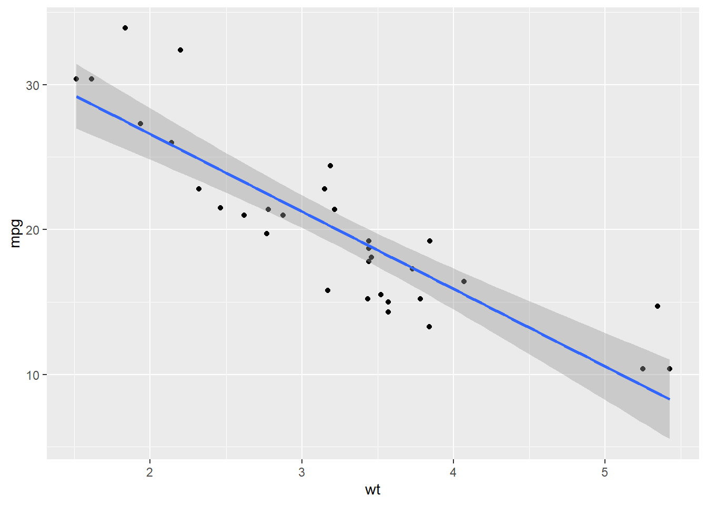

Downloading R
Sienna Blanche and Jonathan Nelson
25 April 2026
Welcome to the World of Bioinformatics
Welcome to your bioinformatics journey! Whether you’re a biologist looking to analyze large datasets or a programmer diving into biological data, mastering bioinformatics can unlock powerful insights. This site is designed to help you get started with R, one of the most widely used tools in bioinformatics. This site will guide you through the basics using hands-on examples and clear explanations. Our goal is to make bioinformatics more accessible and help you build confidence in working with biological data. Let’s start exploring the world of bioinformatics together!
Downloading R
To start having fun with R, you need your own copy. You can download R for Mac, Windows, and Linux for free with this website: The Comprehensive R Archive Network. The top of the webpage has three links for each operating system. Below are detailed instructions for installation.
Mac
First click “Download R for macOS”

Next click on the most up-to-date package link. At the time of the creation of this website, the most current release of R is R 4.4.2 “Pile of Leaves”.

From there, an installer will download and guide you through the installation process. Once downloaded you can find R in your applications folder.
Can also install for Windows
Can also install for Linux
Think of R as the Car Engine!
Downloading RStudio
R is a computer language that is used by writing commands in the language of R and asking your computer to translate them. The way people use R has changed since it was created. Now most people use R with an application called RStudio which allows access to R in a more user-friendly way. You can download RStudio for free here RStudio IDE


Opening RStudio
Think of Rstudio as the Car Chassis!
At this point, you should have both R and RStudio on your computer. To begin using R you need to open the RStudio program. Do this just as you would any program, click on its icon or by typing “RStudio” in your application finder.
When you open R you will see four panels which correspond to the R script, R console, Environment, and Plots.

In the next section we will learn how to download packages so we can start working with datasets!
Installing packages
Packages are collections of functions that help users perform specific tasks. They are useful for visualization, statistical analysis, data manipulation, reproducibility, and even bioinformatics itself. For this example, you will learn how to install ggplot2 which is used for advanced plot creation as well as dplyr which is used for cleaning and transforming data.
Step 1: Download the package
Step 1a: Download one package
There are many ways to download a package. The easiest and most straight forward way to do so is by using the install.packages function. This is a base R function which means you do not need to load any libraries to use it.
To download a package using install.packages you simply need to type it or copy it into your R Script and run it. To run a line of code on a Mac click on the number to the left of the line, press Command + Enter. For Windows the procedure is the same but you should press Control + Enter. In this example I am downloading the package ggplot2.

Step 1b: Download multiple packages
To run many lines of code press the number to the left of at the start of the series of code you want to run then hold and drag to the number to the left of the end of the series of code you want to run. Alternatively you can click the Run button in the top right corner which will run the entire R Script. In this example I am downloading the packages ggplot2 and dplyr.

Verfying packages
There are a number of steps to take to verify you have successfully downloaded a package. The first marker that you are on the right path is when you get this message in the R console.

Secondly, you will want to switch from the default Plots page to the Packages page to check that the packages has been downloaded. Packages that have been installed but not loaded in the session will appear unchecked in the Packages section as seen below.

Special Packages
Some packages you cannot access from R and will have to be obtained from outside sources, like GitHub. For example, the package DoubletFinder is useful for predicting doublets in scRNA-seq data which cleans the data and makes it easier to work with. To download a package from GitHub you will access the user’s GitHub page and copy the installation command to install.
remotes::install_github('chris-mcginnis-ucsf/DoubletFinder')

Now It’s Your Turn!
Copy and Paste These Lines into an R script file
Once installed, you don’t have to do it again (until you update R)
Installation Check
# Load packages
library(dplyr)
library(ggplot2)
# Use built-in dataset
data(mtcars)
# Simple dplyr check
mtcars %>%
group_by(cyl) %>%
summarize(avg_mpg = mean(mpg))# Simple ggplot check
ggplot(mtcars, aes(x = wt, y = mpg)) +
geom_point() +
geom_smooth(method = "lm")